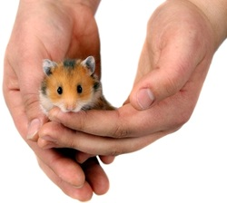

TamedPets.com
About us

There are many people who are interested in pets from the childhood. But in this busy world, people forget to live when they die to earn. Pets are the only companion who will be with you throughout your life, whatever be the situation you are in. TamedPets.com, we began breeding pets by 1996 as a hobby and started trading them for past few years. There proved to be a niche in lower Delaware that no one was addressing, hand-fed Tamed pet Birds & Animals. We expanded into larger Birds and Pets. Now we can serve you with all the exotic varieties of pets across India.
We offer everything from finches to Macaws in Birds & Fancy pets to Gaurd Dogs, in all sizes and price ranges. Every Pet is raised at home or with knowledgeable trainer's facility. As our babies get down to one hand feeding per day, they will be ready to graduate to their new homes. Deposits are accepted at any age, and all new owners are encouraged to come in often, visit and bond with their new family addition.
Orders can be taken if we do not have the specific pets available that you are looking for. We have assembled a very knowledgeable network of friend’s who are also breeders of pet animals and birds. It is very important to us that each customer has an idea of what they are looking for in a PET, so that we can match the right PET to their new owner.
At TamedPets.com, our job is to give you, our customer very happy and healthy pet. We know how much you love your pets because we love ours too. We are committed to continually learning more about pet care, products and nutrition. We promise we will always do our best for you and the animals you love.
Pets for Apartment living
"It is always comforting to have another friendly heartbeat in your home if you are living alone."
It is not unusual for people living in apartments/ multi-storied buildings / paying guests / hostel / to desire the joy of pet ownership even though their apartment complex may have a no pet policy. The no pet policy generally applies to dogs and cats. There are other pet choices that work well in small spaces.
Articles
Hamsters
Hamsters can provide hours of entertainment. The care is fairly basic. You'll need a 12"x24" cage to have a happy hamster. Provide an exercise wheel that is solid-not one with wire rungs as they can injure themselves in this type. At TamedPets, you get tamed hamsters which are comfortable being held. It can be quite fun to watch a hamster run inside of his enclosed exercise ball running across the floor and bumping into walls and toes. Hamsters will come to know your scent and will respond to your voice. You can expect a hamster to live up to three years.
Hamster, their cage, food, toys, wheel, tunnels, hamster rolling balls, bedding, suppliments & pellets are readily available with TamedPets store. contact 9092772233 for inquiries.